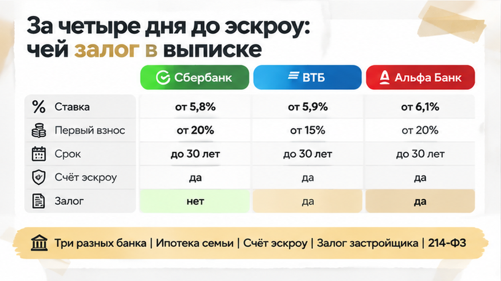

За 4 дня до открытия эскроу в свежей выписке на трёшку в строящемся доме всплыла строка «залог в пользу банка», и ипотечный банк семьи остановил сделку, пока не увидит бумаги. Бронь уже оформлена, ипотеку одобрили, дата регистрации договора стоит в календаре, а ребёнок по планировке выбрал себе комнату. Выписку перед деньгами заказали скорее для порядка и заодно открыли карточку проекта на dom.rf, чтобы сверить её с обещаниями офиса продаж. Менеджер застройщика на вопрос про залог ответил не задумываясь: «Это проектное финансирование, так у всех, подписываем». Банк покупателей посмотрел на ту же строку иначе и попросил документ: как этот залог снимается или почему он не мешает правам будущего дольщика.
Такие строки в выписках мы разбираем до того, как деньги ушли на счёт. Свежие казусы по новостройкам Тюмени и короткие разборы документов выходят в Telegram: «Тюменский Риэлтор», а также в MAX: Тюменский Риэлтор в MAX. Можно прислать свою выписку и спросить, что значит каждая строка.
Скажу честно: менеджер отчасти прав. Почти любой дом сейчас строится на деньги банка, который кредитует застройщика. Под эти деньги банк часто берёт в залог землю под домом и саму стройку. Это долг застройщика перед его банком, а не долг семьи. Поэтому слово «залог» в документах новостройки ещё не означает, что квартиру продали дважды, арестовали или что стройка завтра встанет.
Путаница возникает потому, что в одной покупке рядом стоят три похожие вещи. Первая — ипотека покупателя: семья берёт кредит, и будущая квартира уходит в залог её банку. Вторая — эскроу-счёт: деньги лежат на специальном счёте до сдачи дома и застройщику напрямую не уходят. Третья — залог застройщика: земля и стройка заложены у банка, который дал деньги на строительство. Менеджер говорил про третье. Семья сначала испугалась, что речь о первом. А банк покупателей думал о своём: как это третье скажется на его залоге, который появится после сделки.
Для застройщика такая строка — привычный фон. А банк, который выдаёт семье ипотеку, будет много лет держать её квартиру в залоге, и ему важно понимать, чьи права идут первыми. Устное «так у всех» на этот вопрос не отвечает, поэтому банку понадобилась бумага с основанием и датой. Как выглядит сделка, когда эскроу в итоге так и не открыли, мы разбирали отдельно: почему банк не открыл эскроу перед сделкой.
Я, Святослав Шакин, The Риэлтор в Тюмени, выкладываю такие разборы до эскроу в Telegram и MAX: выписка, ДДУ, ответ банка — без паники и без «подписывайте сегодня».
Слово «залог» в выписке работает как заголовок, а смысл записи прячется в подробностях. Сначала смотрят, кто залогодержатель, то есть какой банк там указан. Потом проверяют, что заложено: земля, вся стройка или отдельные помещения. Дальше выясняют, на каком основании сделана запись и касается ли она той квартиры, которую семья покупает по ДДУ, договору долевого участия. Пока ответов нет, строка не несёт ни плохой, ни хорошей новости. В ней есть только непонятность, а непонятность перед переводом денег обходится дорого.
В этой сделке первый неприятный сюрприз был связан с названиями. В рекламе дом продавался под звучным брендом ЖК, в договоре стояло одно юрлицо, а в строке про залог оказались другие реквизиты. Так бывает часто: бренд, продавец, застройщик и залогодержатель нередко оказываются разными компаниями. Только сверять их надо по документам, а не по буклету. Как чужое юрлицо в договоре едва не сорвало эскроу, мы рассказывали здесь: чужое юрлицо в договоре и эскроу.
Второй сюрприз был связан с датами. Первую выписку семья видела ещё до брони, и строки о залоге там, по их словам, не было. Возможно, её просто никто не заметил. Между бронью и регистрацией договора проходят недели, и за это время в реестре могут появиться новые записи. Поэтому выписку проверяют дважды: на старте и прямо перед деньгами.

Именно вторая, свежая выписка и выложила вопрос на стол. В строке об обременениях стоял банк, но не тот, где семья брала ипотеку, а другой, о котором они раньше даже не слышали. Деньги в этот момент ещё лежали у семьи на счёте, и это было единственное хорошее в том дне.
К вечеру у семьи набралось три ответа, и они не сходились. Менеджер повторял, что подписывать можно. Банк отвечал, что без бумаг дальше не пойдёт. Карточка на dom.rf показывала, что проект существует и декларация опубликована, но по ней не понять, как устроен конкретный залог. До даты, которую уже согласовали все стороны, оставалось четыре дня, и семье надо было решать, кому верить.
В этой истории спорили не про квартиру, а про то, кто кому должен. За одним столом сидели три интереса, и каждый смотрел на строку в выписке по-своему. Банк семьи выдаёт ипотеку и потом много лет держит квартиру в залоге. Эскроу-счёт хранит деньги дольщика до сдачи дома, и застройщик их сразу не получает. Банк застройщика дал деньги на стройку и в обеспечение взял землю под домом и сам недостроенный объект. Такой залог прямо предусмотрен законом о долевом строительстве, 214‑ФЗ, в том числе статьёй 13.1. Это долг застройщика, а не семьи.
Менеджер смотрел на строку глазами застройщика: привычная запись, у всех так. Банк семьи смотрел глазами будущего залогодержателя. Ему важно, чтобы после регистрации ДДУ права дольщика и его собственный залог не упёрлись в чужой залог на ту же стройку. Поэтому банк задал простые вопросы. Кто залогодержатель? На что именно наложен залог? Касается ли он этой трёшки? Как его снимают, когда квартиры продают дольщикам? На всё это можно ответить только бумагой.
Эскроу в этой схеме способ провести расчёт, а не страховка от всего подряд. Деньги защищены правилами счёта. А вот договор, выписку и проектную декларацию за вас никто не проверит.
Семья выбрала самое скучное и самое верное решение: ничего не переводить, пока нет бумаг. Застройщику ушёл письменный запрос. В нём попросили указать правовое основание залога, порядок его снятия или изменения и объяснить, как при этом зарегистрируют их ДДУ. Параллельно юрист открыл карточку проекта на dom.rf и сверил застройщика и декларацию с договором и выпиской.
Дату открытия эскроу перенесли. Бронь, одобрение по ипотеке и ребёнок, который уже выбрал себе комнату по планировке, никуда не делись. Из первоначального взноса не ушло ни рубля, пока на столе не появились документы, которые можно показать своему банку. Ответ застройщика сохранили вместе с датой выписки и версией декларации и только потом вернулись к разговору о сделке. Устное «так у всех» в эту папку не попало.
Вопрос к вам, и он с подвохом. Застройщик присылает письмо: залог штатный, вот схема снятия, всё по закону. Этого хватит, чтобы идти на эскроу по графику? Или вы поставите расчёт на паузу до «да» от своего банка, даже если перенос обойдётся нервами и неудобным разговором с отделом продаж?
С этой строкой ошибаются в обе стороны. Одни видят «залог» и решают, что квартиру уже продали, арестовали или дом вот-вот встанет. Другие слышат «так у всех» и идут подписывать. Правы и те и другие только наполовину. Такая запись часто сопровождает проектное финансирование, и это не приговор сделке. В законе о долевом строительстве ему посвящена отдельная статья 13.1 214‑ФЗ, текст закона открыт, но зубрить его покупателю не нужно.
Важнее другое: нормальный залог и непонятный залог выглядят в выписке одинаково. Разницу видно только в подробностях. Надо понять, какой банк стоит залогодержателем, что именно заложено, касается ли это вашей будущей квартиры и как запись снимается, когда квартиры уходят дольщикам. Пока ответа нет, строка ничего не говорит ни в плюс, ни в минус. Просто переводить деньги под непонятную запись никто не обязан.
Пауза нужна, чтобы собрать бумаги, а не чтобы паниковать. Обычно на это уходит несколько дней, не месяцы.
Две оговорки. Эскроу защищает деньги при расчёте, но договор и застройщика за вас не проверит. Карточка проекта на государственном сайте служит источником для сверки, а не знаком качества. Оценить конкретную запись о залоге без самих документов не сможет никто: ни менеджер, ни риэлтор. Решает бумага, а не интонация в трубке.
В этой истории четыре дня паузы ничего не стоили. Бронь не сгорела, одобрение не пропало, первоначальный взнос остался на счёте семьи. Зато на руках появились документы, с которыми свой банк может ответить по существу. От квартиры семья не отказалась и глаза на строку не закрыла. Она просто остановилась на один шаг раньше денег.
Если у вас бронь в новостройке Тюмени, а в выписке стоит строка, которую никто толком не объясняет, пришлите документы до перевода денег. Я подключусь до эскроу, разберём запись вместе и сформулируем вопросы застройщику и вашему банку.